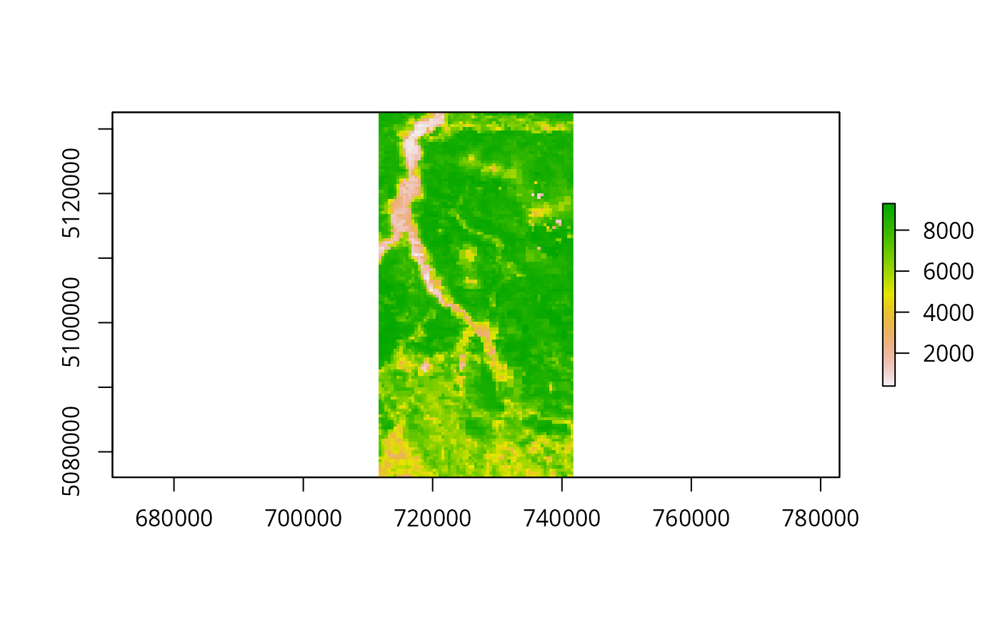
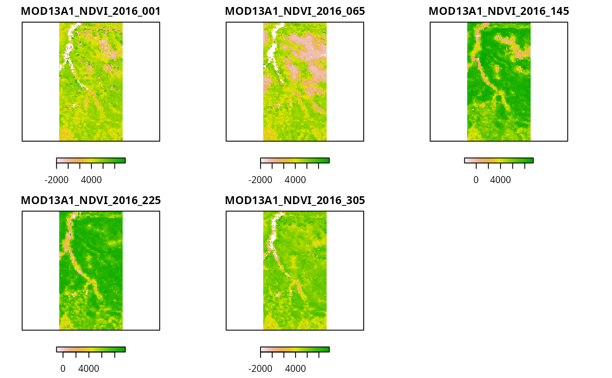
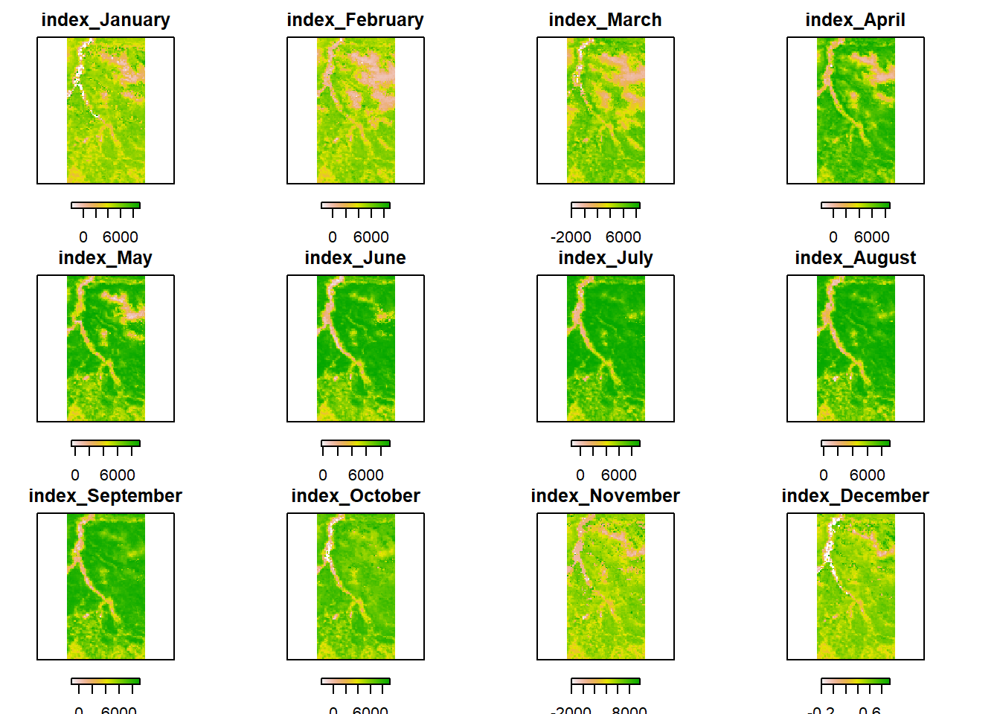
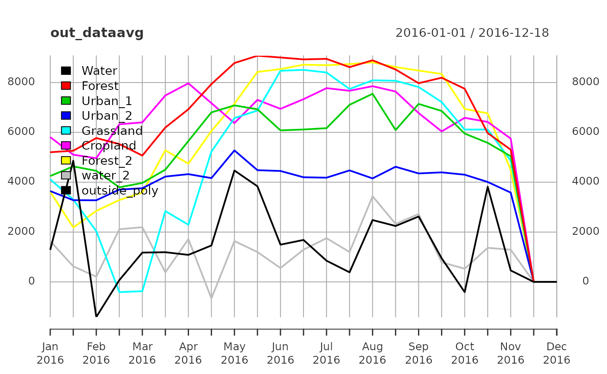
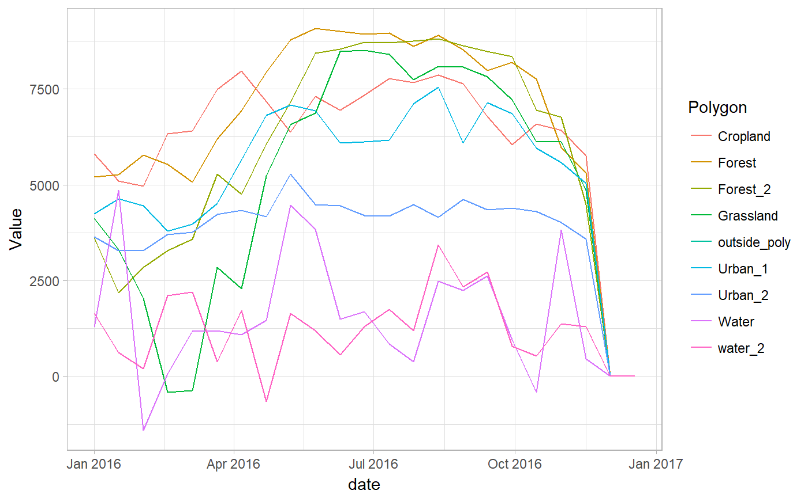
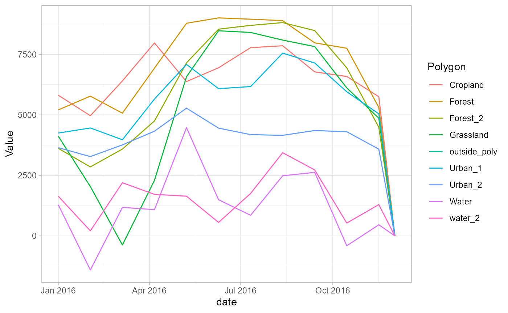

Preprocessed MODIS data can be retrieved within R either by accessing the single-date raster files, or by loading the saved RasterStack objects (see HERE for a description of MODIStsp output folder structure and naming conventions).
To test this functionality, you can run the following example:
library(MODIStsp)
opts_file <- system.file("testdata/test_extract.json", package = "MODIStsp")
MODIStsp(options_file = opts_file, gui = FALSE, verbose = FALSE)This will download a yearly time series of MODIS NDVI data and subset it over the region of the Como Lake in Italy.
After the download and processing finishes (it will take a while, depending on your network speed), the MODIS time series will be placed in subfolder MODIStsp/VI_16Days_500m_v6 of R tempdir(). (In this case, I have them in “file.path(tempdir(), "VI_16Days_500m_v6"”. If you want to save them elsewhere, run MODIStsp(options_file = opts_file, gui = TRUE) and select a different output folder).
Single-date processed rasters can be accessed by simply opening them with a raster command:
modistsp_file <- file.path(tempdir(), "MODIStsp/VI_16Days_500m_v6/NDVI", "MOD13A1_NDVI_2016_177.tif")
my_raster <- raster(modistsp_file)
plot(my_raster)
RasterStack (or GDAL vrt) time series containing all the processed data for a given parameter are saved in the “Time Series/RData” subfolder, and can be accessed by:
# Load the NDVI time series
ts_folder <- file.path(tempdir(), "MODIStsp/VI_16Days_500m_v6/Time_Series")
in_virtual_file <- file.path(ts_folder, "RData/Terra/NDVI/MOD13A1_NDVI_1_2016_353_2016_RData.RData")
ts_data <- get(load(in_virtual_file))
ts_data## class : RasterStack
## dimensions : 122, 65, 7930, 23 (nrow, ncol, ncell, nlayers)
## resolution : 463.3127, 463.3127 (x, y)
## extent : 711648.3, 741763.7, 5076054, 5132578 (xmin, xmax, ymin, ymax)
## coord. ref. : +proj=sinu +lon_0=0 +x_0=0 +y_0=0 +a=6371007.181 +b=6371007.181 +units=m +no_defs
## names : MOD13A1_NDVI_2016_001, MOD13A1_NDVI_2016_017, MOD13A1_NDVI_2016_033, MOD13A1_NDVI_2016_049, MOD13A1_NDVI_2016_065, MOD13A1_NDVI_2016_081, MOD13A1_NDVI_2016_097, MOD13A1_NDVI_2016_113, MOD13A1_NDVI_2016_129, MOD13A1_NDVI_2016_145, MOD13A1_NDVI_2016_161, MOD13A1_NDVI_2016_177, MOD13A1_NDVI_2016_193, MOD13A1_NDVI_2016_209, MOD13A1_NDVI_2016_225, ...
## time : 2016-01-01 - 2016-12-18 (range), which gives us a 23-band RasterStack in the ts_data variable.
This RasterStack can be analyzed using the functionalities for raster/raster time series analysis, extraction and plotting provided for example by the raster or rasterVis packages:
# plot some dates
plot(ts_data[[c(1,5,10,15,20)]], axes = FALSE, horizontal = T)
# Extract one date from the stack
mydate <- as.Date("2016-01-01")
substack <- subset(ts_data, which(getZ(ts_data) == mydate)) %>% setZ(mydate)
substack ## class : RasterLayer
## dimensions : 122, 65, 7930 (nrow, ncol, ncell)
## resolution : 463.3127, 463.3127 (x, y)
## extent : 711648.3, 741763.7, 5076054, 5132578 (xmin, xmax, ymin, ymax)
## coord. ref. : +proj=sinu +lon_0=0 +x_0=0 +y_0=0 +a=6371007.181 +b=6371007.181 +units=m +no_defs
## data source : /tmp/RtmpI4cmH4/MODIStsp/VI_16Days_500m_v6/NDVI/MOD13A1_NDVI_2016_001.tif
## names : MOD13A1_NDVI_2016_001
## time : 2016-01-01# Extract multiple dates from the stack
mindate <- as.Date("2016-01-01")
maxdate <- as.Date("2016-04-01")
substack <- subset(ts_data,
which(getZ(ts_data) >= mindate & getZ(ts_data) <= maxdate))
substack ## class : RasterStack
## dimensions : 122, 65, 7930, 6 (nrow, ncol, ncell, nlayers)
## resolution : 463.3127, 463.3127 (x, y)
## extent : 711648.3, 741763.7, 5076054, 5132578 (xmin, xmax, ymin, ymax)
## coord. ref. : +proj=sinu +lon_0=0 +x_0=0 +y_0=0 +a=6371007.181 +b=6371007.181 +units=m +no_defs
## names : MOD13A1_NDVI_2016_001, MOD13A1_NDVI_2016_017, MOD13A1_NDVI_2016_033, MOD13A1_NDVI_2016_049, MOD13A1_NDVI_2016_065, MOD13A1_NDVI_2016_081
## time : 2016-01-01, 2016-01-17, 2016-02-02, 2016-02-18, 2016-03-05, 2016-03-21# Compute monthly averages
month_avg <- stackApply(ts_data, months(getZ(ts_data)), fun = mean)
month_avg## class : RasterBrick
## dimensions : 122, 65, 7930, 12 (nrow, ncol, ncell, nlayers)
## resolution : 463.3127, 463.3127 (x, y)
## extent : 711648.3, 741763.7, 5076054, 5132578 (xmin, xmax, ymin, ymax)
## coord. ref. : +proj=sinu +lon_0=0 +x_0=0 +y_0=0 +a=6371007.181 +b=6371007.181 +units=m +no_defs
## data source : in memory
## names : index_January, index_February, index_March, index_April, index_May, index_June, index_July, index_August, index_September, index_October, index_November, index_December
## min values : -1891.0, -1770.0, -2000.0, -1780.0, -510.0, -202.5, -1347.0, -275.0, -1158.0, -1944.0, -2000.0, -0.2
## max values : 9130.00000, 8888.00000, 8577.00000, 8699.50000, 9231.50000, 9284.50000, 9229.50000, 9110.50000, 9187.00000, 9173.00000, 9824.00000, 0.93525plot(month_avg, axes = FALSE, horizontal = T)
MODIStsp provides an efficient function (MODIStsp_extract) for extracting time series data at specific locations. The function takes as input a RasterStack virtual object created by MODIStsp (see above), the starting and ending dates for the extraction and a standard sp object (or an ESRI shapefile name) specifying the locations (points, lines or polygons) of interest, and provides as output a xts object or data.frame containing time series data for those locations.
If the input is of class SpatialPoints, the output object contains one column for each point specified, and one row for each date. If it is of class SpatialPolygons (or SpatialLines), it contains one column for each polygon (or each line), with values obtained applying the function specified as the “FUN” argument (e.g., mean, standard deviation, etc.) on pixels belonging to the polygon (or touched by the line), and one row for each date.
To test MODIStsp_extract we can start by loading the NDVI RasterStack time series created in the previous example:
ts_folder <- file.path(tempdir(), "MODIStsp/VI_16Days_500m_v6/Time_Series")
in_virtual_file <- file.path(ts_folder, "RData/Terra/NDVI/MOD13A1_NDVI_1_2016_353_2016_RData.RData")
ts_data <- get(load(in_virtual_file))
ts_data## class : RasterStack
## dimensions : 122, 65, 7930, 23 (nrow, ncol, ncell, nlayers)
## resolution : 463.3127, 463.3127 (x, y)
## extent : 711648.3, 741763.7, 5076054, 5132578 (xmin, xmax, ymin, ymax)
## coord. ref. : +proj=sinu +lon_0=0 +x_0=0 +y_0=0 +a=6371007.181 +b=6371007.181 +units=m +no_defs
## names : MOD13A1_NDVI_2016_001, MOD13A1_NDVI_2016_017, MOD13A1_NDVI_2016_033, MOD13A1_NDVI_2016_049, MOD13A1_NDVI_2016_065, MOD13A1_NDVI_2016_081, MOD13A1_NDVI_2016_097, MOD13A1_NDVI_2016_113, MOD13A1_NDVI_2016_129, MOD13A1_NDVI_2016_145, MOD13A1_NDVI_2016_161, MOD13A1_NDVI_2016_177, MOD13A1_NDVI_2016_193, MOD13A1_NDVI_2016_209, MOD13A1_NDVI_2016_225, ...
## time : 2016-01-01 - 2016-12-18 (range), which again gives us the 23-band RasterStack in the ts_data variable.
To extract the NDVI data over selected areas, we can then use the MODIStsp_extract function as follows:
# load a shapefile containing polygons --> Here we use a test shapefile in
# the testdata folder of MODIStsp.
polygons <- rgdal::readOGR(system.file("testdata/extract_polys.shp",
package = "MODIStsp"),
verbose = FALSE)
polygons## class : SpatialPolygonsDataFrame
## features : 10
## extent : 9.248174, 9.526815, 45.91182, 46.18547 (xmin, xmax, ymin, ymax)
## coord. ref. : +proj=longlat +datum=WGS84 +no_defs +ellps=WGS84 +towgs84=0,0,0
## variables : 2
## names : id, lc_type
## min values : 1, Cropland
## max values : 9, water_2# Now extract the average values for each polygon and date and plot the results
out_dataavg <- MODIStsp_extract(ts_data, polygons, id_field = "lc_type",
small = FALSE)
head(out_dataavg)## Water Forest Urban_1 Urban_2 Grassland Cropland Forest_2
## 2016-01-01 1286.000 5205.000 4249 3645.444 4118.6667 5810.769 3617.222
## 2016-01-17 4863.333 5264.333 4636 3279.889 3305.1667 5104.769 2183.111
## 2016-02-02 -1408.000 5773.667 4458 3276.111 2037.5000 4964.385 2849.444
## 2016-02-18 69.680 5532.667 3795 3705.333 -409.4000 6325.692 3286.222
## 2016-03-05 1176.000 5070.000 3972 3759.333 -374.6667 6402.231 3586.556
## 2016-03-21 1191.143 6197.333 4506 4226.889 2841.0000 7483.077 5281.000
## water_2 outside_poly
## 2016-01-01 1637.2500 NA
## 2016-01-17 624.5714 NA
## 2016-02-02 207.5714 NA
## 2016-02-18 2113.1000 NA
## 2016-03-05 2195.0000 NA
## 2016-03-21 383.2857 NA# Other summarization functions can be used, by specifying the "FUN" argument.
# Compute the Standard Deviation over each polygon:
out_datasd <- MODIStsp_extract(ts_data, polygons, id_field = "lc_type",
FUN = "sd", small = FALSE)The output is a xts object, with one column for each polygon of the input shapefile, and one row for each date. We can easily plot the computed averages using:
library(xts)
plot(out_dataavg, legend.loc = "topleft")
We can also transform the output dataset to a long format and use ggplot2 for plotting and other tidyverse-friendly functions for analysis:
library(ggplot2)
out_dataavg_df <- data.frame(date = index(out_dataavg), coredata(out_dataavg)) %>%
tidyr::gather(Polygon, Value, -date)
ggplot2::ggplot(out_dataavg_df, aes(x = date, y = Value, color = Polygon)) +
geom_line() + theme_light()
require(tibbletime)
require(dplyr)
# Compute monthly averages using tibbletime:
out_dataavg_tt <- tibbletime::as_tbl_time(out_dataavg_df, index = date)
month_avg <- out_dataavg_tt %>%
dplyr::group_by(Polygon) %>%
tibbletime::as_period(period = "monthly")
ggplot2::ggplot(month_avg, aes(x = date, y = Value, color = Polygon)) +
geom_line() + theme_light()
IMPORTANT NOTES - 1 MODIStsp_extract is usually much faster than the standard raster::extract function, but does not deal with overlapping polygons. If your polygons are overlapping, please use raster::extract instead.
IMPORTANT NOTES - 2 A more powerful extraction function can be also found in the sprawl package, currently under development on github (https://lbusett.github.io/sprawl/). In particular, sprawl::extract_rast deals much better with large rasters and long time series.